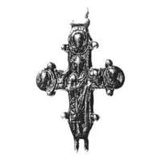

Catalog › CE-0917 · KOR2003-II.3.1.40
Valvă de revers cu prinț cu coroană în mâna stângă, figură deplasată, probabil turnată după amprentă
sec. început XII (1101–1200) · loc necunoscut · Muzeul de Istorie de Stat, Moscova (GIM), secția de arheologie, inv. 2948щ, оп. 1981 В/2
single valve of a reliquary cross, aramă; c. început XII (1101–1200); find spot unknown; kept at Muzeul de Istorie de Stat, Moscova (GIM), secția de arheologie.


Identificare
- Categorie
- Valvă izolată
- Material
- Aramă
- Tehnică
- Turnare în relief
- Dimensiuni
- Î 58 × L 49 mm
Iconografie
- Revers
- Neidentificat
- Descriere revers
- Balama stângă de sus ruptă. Pe fața interioară se văd adâncituri care repetă contururile părții de jos a figurii prințului. Figura centrală: sfânt cu coroană în mâna stângă, în trei medalioane figuri de sfinți până la umeri. Partea de jos a figurii prințului este deplasată spre stânga, încât ajunge la marginea ramurii de jos a crucii; și medalionul de pe ramura stângă e puțin deplasat (diferență de diametru de 0,2 cm față de cel drept). În ciuda abundenței detaliilor (ornament, cute), imaginile sunt șterse. Perimetrul crucii este conturat în dreapta cu o linie ondulată, în stânga bordura lipsește. Particularitățile fac să se presupună turnare după amprentă în lut.
- Inscripții
- urme de litere (în stânga prințului)
Datare și atribuire
- Datare
- sec. început XII (1101–1200)
- Centru
- Necunoscut
- Tipologie
- Korzukhina–Peskova 2003, tip II 3 1
Descoperire
- Context
- Colecție (fără context)
Păstrare și referințe
- Colecție
- Muzeul de Istorie de Stat, Moscova (GIM), secția de arheologie
- Nr. inventar
- 2948щ, оп. 1981 В/2
- Bibliografie
- G. F. Korzukhina, A. A. Peskova, Древнерусские энколпионы. Нагрудные кресты-реликварии XI–XIII вв., Sankt-Petersburg, 2003 [Korzukhina–Peskova 2003], p. 92, cat. nr. II 3 1/40, reprodusă la Табл. 43 (planșe, p. 285). Bibliografie citată în sursă: Алешковский 1972, фото на с. 115 слева.
- Figura
- Табл. 43
- Planșe
- Korzukhina–Peskova 2003, Табл. 43 (planșă fără paginație proprie în PDF; p. 285 tipărită)
- Observații
- Datare după Peskova: sec. început XII. Inscripții adâncite, în stânga prințului, de care se păstrează doar urme. Coordonate: nu sunt date în sursă.
Citare: Corpus Encolpiorum, CE-0917, Valvă de revers cu prinț cu coroană în mâna stângă, figură deplasată, probabil turnată după amprentă, --root/piese/KOR2003-II.3.1.40/ (accesat 2026-10-20).